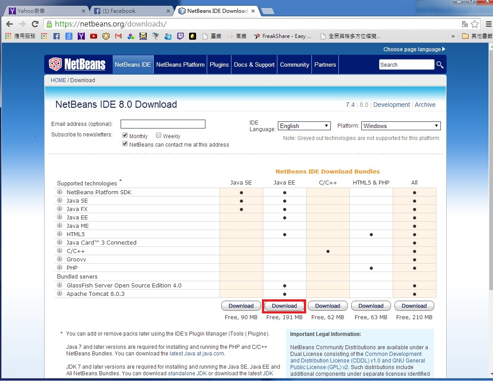
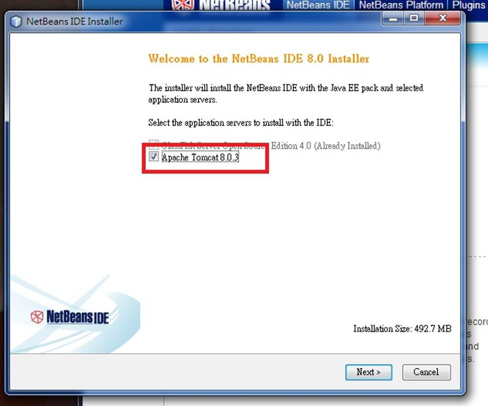
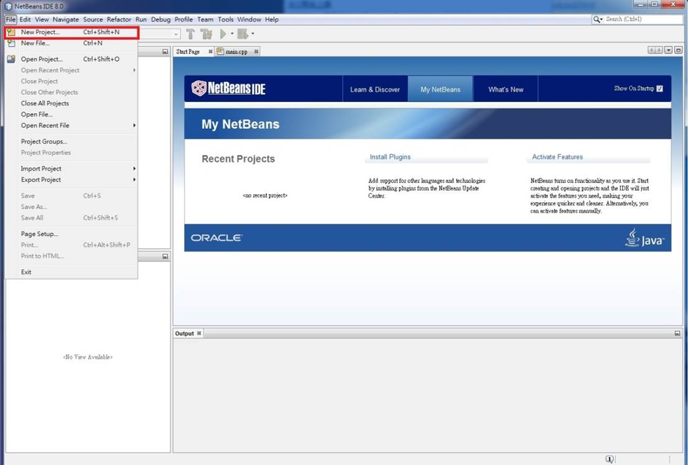
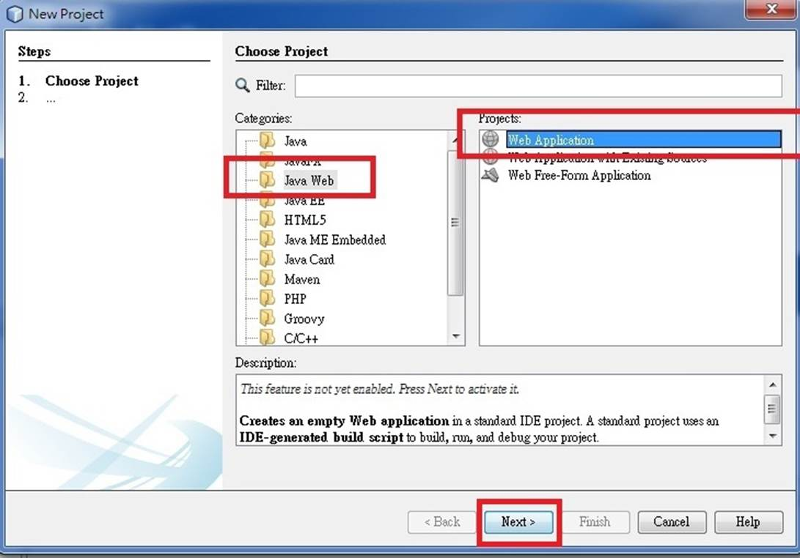
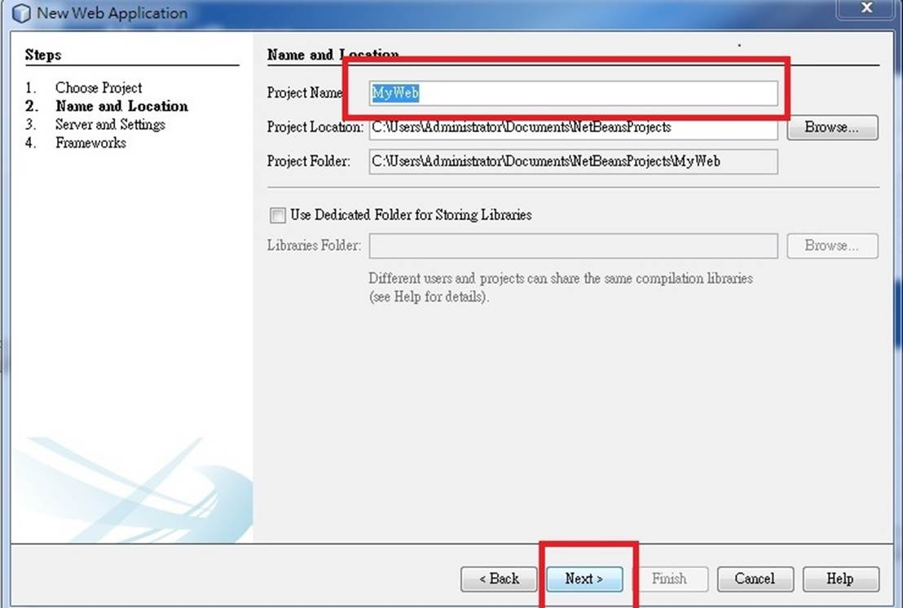
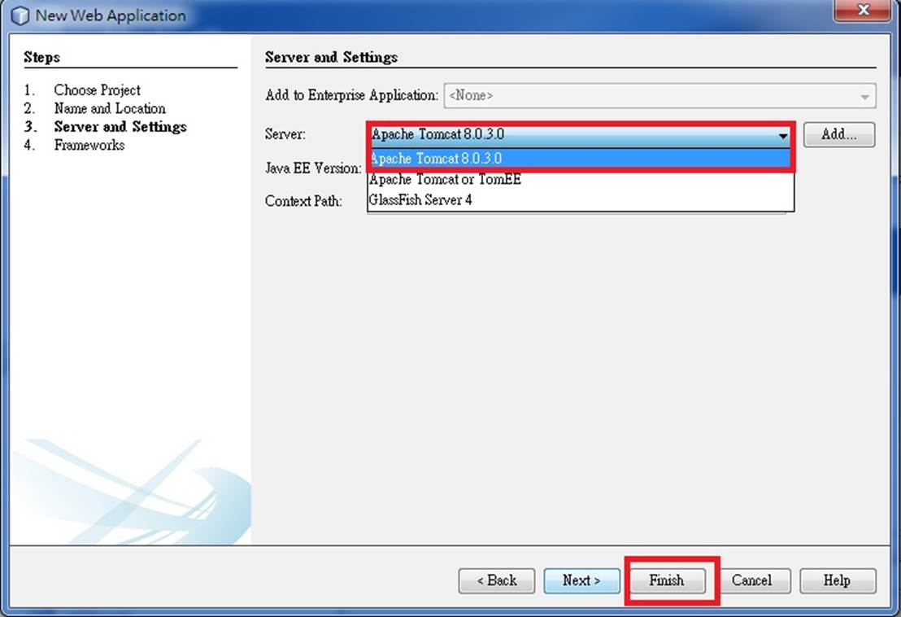
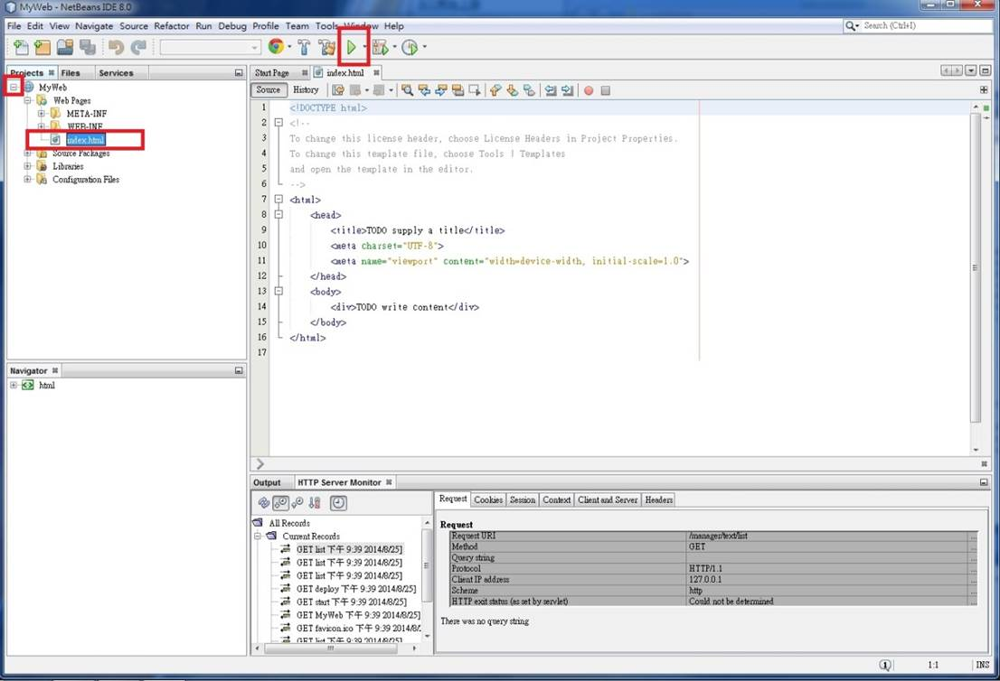
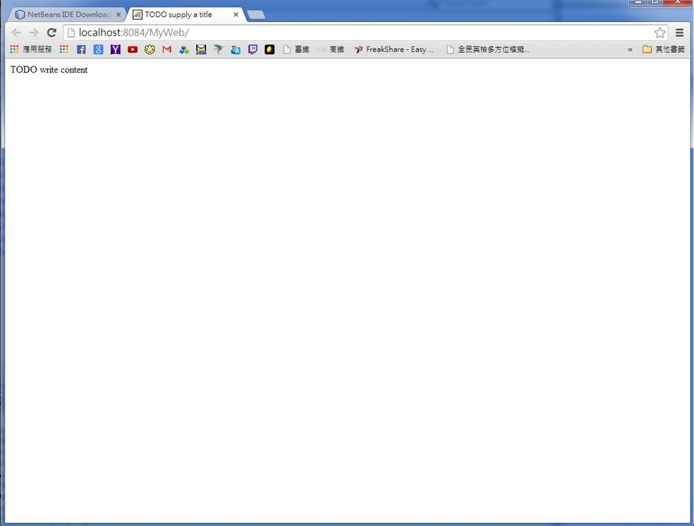

1.首先到https://netbeans.org/downloads/
下載netbeans 選擇紅框的那個（因為要包括tomcat）

2.下載之後就安裝吧!! 安裝的時候會出現紅框框那個
記得打勾

3. 再來把netbeans打開 選NEW project
 4. 選Java Web 然後 WebApplication 最後選next

5. 取個名子 然後next

6. Server選apache Tomcat 然後finsh

7. 再來點到index 按上面的綠色三角形

8. You Got it
